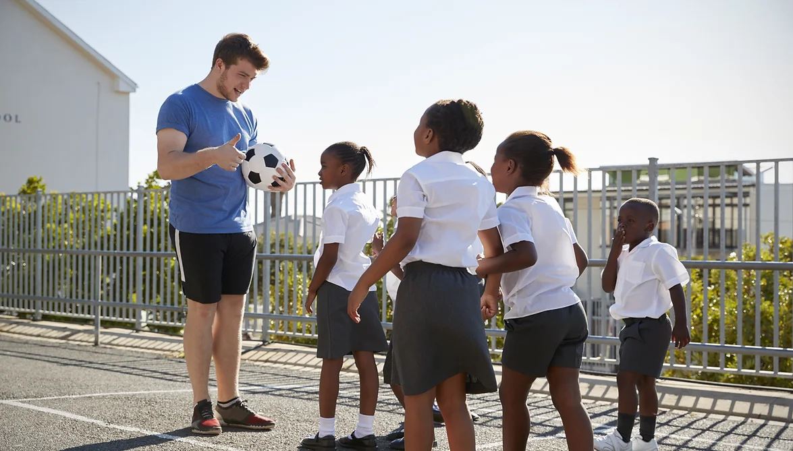
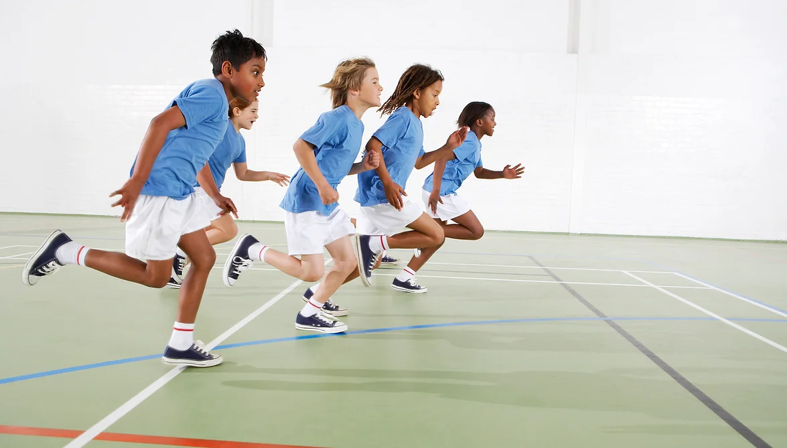

Bazı sporlara başlamak için ideal yaşlar vardır. Çocuğunuzun yaşına en uygun spor ve egzersizleri sizin için listeledim.
2-5 YAŞ
Yeni yürümeye başlayan çocuklar ve okul öncesi çocuklar birçok temel harekette ustalaşmaya başlasalar da organize spor için henüz çok küçükler. Bu yaş grubu için uygun olabilecek spor ve aktiviteler şunları içerir: Koşu, atlama, zıplama, hoplama, fırlatma, yakalama, yüzme, üç tekerlekli bisiklet sürme, oyun alanı ekipmanına tırmanma yapabilirler.
6-9 YAŞ
Çocuklar büyüdükçe vizyonları, dikkat süreleri, motor koordinasyonları ve uzun mesafe fırlatma gibi becerileri gelişir. Yönergeleri daha iyi takip edebilirler. Bu yaş grubu için uygun olabilecek spor ve aktiviteler şunları içerir: Futbol, koşu, jimnastik, yüzme, tenis, dövüş sanatları, dans, ip atlama, paten veya buz pateni, doğa yürüyüşü, kayak yapabilirler.
Çocuklar için spor ve egzersiz seçenekleri yaparken kendinize şu soruları sormalısınız:
Çocuğum bu aktiviteden zevk alacak mı?
Bu spor, yaşına uygun beceri gelişimine uygun mu?
Çocuğumun farklı seçenekleri ve çeşitli etkinlikleri keşfetmesine nasıl yardımcı olabilirim?

Evde çocuklar için spor hareketleri çocukların fiziksel gelişimine önemli ölçüde katkı sağladığı gibi, boy uzatma ve esnek yapıda olmalarında da etkin rol oynuyor. Çocuğunuz bu egzersizleri yaparken siz de aynı hareketleri yaparak birlikte spor deneyimi yaşayabilirsiniz. Enerjilerini doğru şekilde harcamalarına yardımcı olacak olan bu spor hareketleri, aynı zamanda hareketsizliğin sebep olduğu sorunların da önüne geçecektir.
Evde Çocuklar İçin Spor Hareketleri Öncesinde Hazırlık Nasıl Yapılmalıdır?
Spora başlamadan önce hareketlerin yapılacağı alanda düz ve yumuşak bir zemin hazırlamalısınız. Spor matı, ince minder ya da yumuşak halı kullanabilirsiniz. Olası bir düşme ya da diğer olumsuz durumların önüne geçmek büyük önem taşır. Diğer yandan hareketleri kısıtlamayacak giysilerin giyilmesi de rahat bir şekilde spor yapılmasına katkı sağlayacaktır. Spor hareketlerine başlamadan önce çocuğunuzun yemek yediği saati de göz önüne almanız gerekir.
Çocuğunuzun hareketleri yapmasını engelleyecek fiziksel bir engeli varsa ya da siz bu konuda endişe duyuyorsanız mutlaka öncesinde doktoruna danışmanızı öneririz. Bilinçsizce yapılacak hareketler olumsuz sonuçlara neden olabileceğinden dikkatli olmak son derece önemli.
Çocuklar İçin Evde Yapılabilecek Spor Hareketleri Nelerdir?
Çocuklar için evde yapılabilecek spor hareketlerini düzenli uygulandığında bunun birçok yararı olacaktır. Enerjilerinin doğru yönde harcanması onların hem mutlu olmalarını sağlayacak hem de odaklanma problemlerinden uzakta tutacaktır.
1- Zıplama hareketi
Listemize en eğlenceli çocuk spor hareketlerinden birisi ile başlıyoruz. Hareketi yaparken öncelikle iki el yanlarda duracak ve zıplandığında eller de yukarıda birleşecek. Bu hareket esnekliği arttırdığı gibi aynı zamanda boy uzamasına da yardımcı oluyor. Çocuğun yaşına göre 20-30 tekrar yapılması öneriliyor.
2- T duruşu egzersizi
Birçok kası aynı anda çalıştırıp, kondisyonu geliştiren bu hareket 12-13 ya spor hareketleri arasında bulunuyor. Pozisyonu sağlamak için ellerden destek alınarak şınav pozisyonuna geçilir, bir elden destek alınıp diğer el yandan havaya kaldırılır. Her bir el için bu hareket 5’er kez tekrar edilir.
3- Yumruklama egzersizi
Evde kolaylıkla yapılabilecek egzersiz hareketlerinden olan yumruklama egzersizinde ayaklar omuz genişliğinde açıldıktan sonra eller yumruk yapılır. Sağ ve sollu olacak şekilde ileriye doğru yumruk atar gibi uzatılır. 30 saniye tekrar edilen bu hareket, kol kaslarını güçlendirmeye yardımcıdır.
4- Kulaç atma egzersizi
Eğlenceli bir diğer çocuk spor hareketi ise ayakların omuz hizasında açılıp ellerin kulaç atıyormuş gibi hareket ettirilmesidir. Bu hareket de 20-30 kez tekrarlanabilir.
5- Tepme hareketi
Bu hareket için ellerin desteği alınarak dizlerin üzerinde durulur. 10’ar kez geriye doğru tekme atılır. Tepme hareketi kalça ve ayak kaslarını güçlendiren bir harekettir.
6- İleri zıplama egzersizi
7 yaş ve üzeri çocukların yapabileceği bir hareket olan ileri zıplama hareketi esnasında yaralanma ya da ortaya çıkabilecek olumsuz durumların önüne geçmek için ebeveyn gözetiminde yapılması öneriliyor. Bu hareket için çocuğun boyuna uygun bir koltuğun önüne geçerek bir yerden destek almadan koltuğun üzerine zıplaması ve zıplayarak da geri inmesi şeklinde yapılır. 10 kez tekrar edilmesi yeterli olacaktır.
7- Elma toplama egzersizi
Boy uzatma egzersizleri arasında yer alan elma toplama egzersizi odaklanmayı arttırıp bacak kaslarını geliştiriyor. Bu hareket için bacaklar omuz genişliğinde açılır ve zıplayarak elma toplandığı düşünülür. Hareket yaklaşık 30-40 saniye boyunca tekrar edilir.